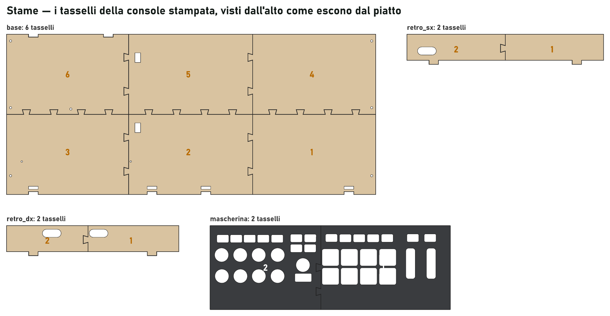

Una console di betulla che le tiene tutte e tre.
La MPK mini IV a sinistra, sotto una mascherina di acrilico nero inciso che le appoggia sopra; il macro pad a destra in linea con i tasti, in una culla come quella della Flip; la Miyoo Flip dietro il pad, con lo schermo a 65°. Un piano nero solo, alla stessa quota da un fianco all'altro: 583,5 × 244 mm, alto 46. Hub e cavi stanno sotto, coperti.


Nove passi, linguette nelle asole e colla.
Nessuna vite in vista: retro, costola e parete davanti si incastrano nella base a linguetta, i fianchi sono quattro strati di betulla da 4 mm. In ambra i pezzi che ogni passo aggiunge.


Cinque fogli per il laser, cinque stampe, un foglio di carta.
Lastre da 390 × 390 per una AtomStack S10, impaginate per materiale; in rosso il taglio, in marrone l'incisione. Fianchi e mascherina hanno le stesse lettere a punti dello schermo.


Culla e visiera della Flip
Un vassoio basso con un intaglio solo per jack e USB-C, aperto dietro e alle spalle; una visiera che segue lo schermo a 65°.
Culla del pad, fermo, squadrette
La culla che tiene il pad alla quota del piano, stampata in piedi senza supporti; il fermo dell'hub; sei squadrette M3 fra base e fianchi.
Feltro
Strisce di feltro adesivo da 1 mm sugli strati d'appoggio: il piano ci posa alla quota della MPK e non vibra.
Tasti trasparenti, hub, viti
Quindici tasti trasparenti a due strati per Cherry MX, un hub USB fino a 142 × 58 × 17,5 mm (meglio USB 2.0 semplice, senza Power Delivery), due cavi USB-C a 90°, viti M3 × 10 e dadi, viti da legno 3 × 12, sei piedini in gomma.
Misurato sulle foto, verificato sulla carta.
Ogni misura sta in un file solo, misure.py, con la sua fonte: [M] manuale o scheda, [O] osservato, [D] dedotto, [V] da verificare. I controlli della MPK sono misurati su una foto dall'alto in cui la scala torna sui due assi, a circa un millimetro; il macro pad su dieci foto dall'alto e di fianco per gli strati e le altezze, e con il metro posato sulla piastra per il contorno (185 × 75 mm, con il lobo davanti), le manopole, la presa USB-C e l'interruttore sul retro; le porte della Flip su due foto che concordano entro mezzo millimetro.
Costruire il modello 3D dai pezzi ha fatto trovare errori veri prima di tagliare il legno: pareti sovrapposte al piano, viti fuori dalle pareti, una culla che copriva le spalle della Flip, fori della mascherina sovrapposti e le incisioni dei fianchi a specchio. Ora il generatore rifiuta un pezzo inciso che si leggerebbe al contrario.
Le tre verifiche che restano
- Stampare la dima della mascherina al 100 %, controllare il righello di 100 mm, posarla sulla MPK.
- Un taglio di prova per tarare il laser e il gioco delle linguette (0,2 mm per lato).
- Le altezze: il pannello e i pulsanti piccoli della MPK, il corpo del pad e la sua presa USB-C, quanto si apre la Flip (servono 115°).
La stessa console, tutta stampata.
Per chi ha una stampante 3D e non un laser: gli stessi pezzi, la stessa disposizione, lo stesso montaggio. Gli strati incollati diventano un pezzo solo; quello che non sta sul piatto si stampa in tasselli a coda di rondine, da incollare; le scritte troppo fini per un ugello da 0,4 si stampano su carta adesiva e vanno nelle loro tasche. Basta un piatto da 220 × 220 e circa 1,3 kg di PETG o PLA.



Istruzioni della versione stampata
I pezzi con le misure, le impostazioni, come si incollano i tasselli, le scritte e le differenze dal montaggio.
Ventuno file
Ognuno nel verso giusto, con la faccia in vista in alto, dentro un piatto da 210 × 210 mm.
Etichette
Da stampare al 100 % su carta adesiva, con la mappa delle tasche e una serie di ricambio.
A più colori: le scritte le fa la stampante
Con una stampante a più filamenti (come la Anycubic Kobra S1 con l'ACE Pro) c'è una versione in più, accanto a questa: su mascherina, piano della Flip e fianchi le scritte sono incassate a filo nella faccia in vista, profonde tre strati, nell'altro colore. La faccia in vista si stampa sul piatto: viene liscia, e il cambio di filamento serve solo nei primi tre strati. Le scritte sono ridisegnate con Matrice, il carattere 5×7 di Stame, a quadretti da 0,45 mm; i piani sono neri con le scritte sabbia, i fianchi color telaio con le scritte nere. Ogni pezzo con le scritte è un 3MF con le due parti, i filamenti già assegnati.

Tutto si rigenera da una tabella di misure.
Istruzioni di montaggio
Pezzi e minuteria, un passo per pagina, in fondo le verifiche.
Progetti di taglio
I cinque fogli 1:1 e la dima di carta della mascherina; SVG per LightBurn, DXF per tutto il resto.
Pezzi stampati ed etichette
Già girati nel verso giusto e appoggiati sul piatto; le etichette su un A4.
Modelli e rendering
SketchUp con una scena per passo, OBJ in millimetri, la scena di Blender che fa questi rendering.
python -I hardware/case/genera.py # pezzi, fogli di taglio, STL
python -I hardware/case/assieme.py # modello 3D, tavole del montaggio
python -I hardware/case/stampa3d.py # la console tutta stampata
python -I hardware/case/manuale.py # PDF: istruzioni, progetti di taglio, versione stampata
python -I hardware/case/etichette.py # le etichette dei tasti
python -I hardware/case/rendering.py # rendering con Blender (Cycles, GPU)Script, misure e note sono in hardware/case; i requisiti nella specifica del case.